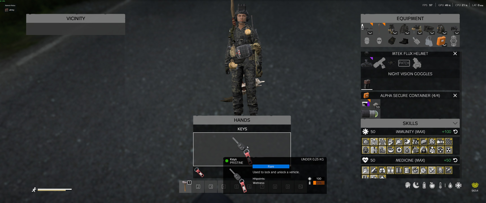
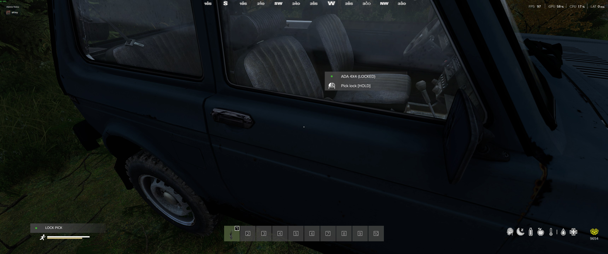
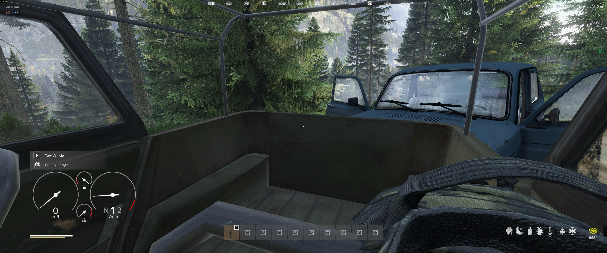

Vehicles¶
DeerIsle is a massive map. Walking everywhere will drain your stamina and leave you vulnerable. Finding, repairing, and securing a vehicle is a major milestone in your survival journey.
Table of Contents¶
Vehicle Types¶
Survivatorium offers a variety of vehicles to suit your needs, from simple transport to heavy military hardware.
Cars & Trucks¶
- Civilian Vehicles: Standard cars and off-roaders (like the UAZ) are great for getting around quickly.
- Transport: Buses and cargo trucks are perfect for moving large groups or hauling base-building supplies.
- Military: Armored vehicles like the Vodnik offer superior protection but are rare and expensive to maintain.
Boats¶
With DeerIsle's extensive waterways and islands, boats are incredibly useful. - Zodiacs (Vanilla/STAG): Fast, light, and easy to hide. Require a Spark Plug to run. - Large Zodiac & Utility Boats: Better for transporting gear and small groups. Require a Glow Plug, Truck Battery, and Car Radiator — same parts as a diesel car.
Helicopters¶
The ultimate flex. Helicopters allow you to bypass the dangerous roads entirely, but they are difficult to fly and expensive to maintain. - Light Choppers: The MH-6 Little Bird is fast and agile. - Heavy Transport: The Merlin and Huey can carry your whole squad and a massive amount of loot.
Keys & Locks¶

A vehicle without a key is just a temporary ride. To truly own a vehicle, you need to secure it.
How Keys Work¶
- Starting the Engine: You must have the paired key in your inventory to start the vehicle.
- Locking: You can lock the vehicle to prevent others from accessing the inventory or getting in. Note: All doors must be attached to fully secure the vehicle!
Getting Keys¶
- Finding Them: Sometimes you'll get lucky and find a vehicle that spawned with its key inside.
- Buying Them: Traders sell blank keys and master keys.
- Copying: You can use a Master Key to create a duplicate of an existing key, which is essential for sharing access with your group.
Lockpicking¶

Found a locked vehicle you want to steal? You'll need a Lockpick and a lot of patience.
The Process¶
- Approach the locked vehicle with a Lockpick in your hands.
- Start the lockpicking action.
- Wait: Lockpicking takes a significant amount of time, leaving you completely exposed.
- Chance of Success: It is not guaranteed! You might fail, and every attempt will damage your lockpick.
Lock Complexity¶
Not all locks are created equal. A simple Zodiac boat is relatively easy to pick, while a military Vodnik or a heavy transport helicopter has complex security systems that will test your patience and your supply of lockpicks.
Towing¶

Found a broken-down car but don't have the parts to fix it on the spot? Tow it home!
How to Tow¶
- Position a working vehicle in front of the broken one.
- Access the interaction menu on the working vehicle and select the tow option.
- Attach the tow cable to the rear vehicle.
Towing Tips¶
- The towing vehicle needs a strong engine to pull the extra weight.
- The towed vehicle has no steering control, so take your turns wide and drive carefully!
- Always detach the towed vehicle before logging off or parking for the night.
Maintenance¶
Vehicles require constant upkeep. If you neglect them, they will leave you stranded.
Essential Parts¶
- Cars: Spark Plug (or Glow Plug for diesel), Car Battery, Radiator (filled with water!), and four intact tires.
- Helicopters: Helicopter Battery, Igniter Plug, Hydraulic Hoses, and a working Tail Rotor.
- Boats (Vanilla Zodiac, STAG): Spark Plug and fuel.
- Boats (Large Zodiac & Utility Boat): Glow Plug, Truck Battery, Car Radiator, and fuel.
Common Issues¶
- Won't Start: Check the battery and spark plug. Make sure you have fuel!
- Overheating: Your radiator is either ruined or empty. Stop immediately and add water, or you will destroy the engine.
- Pulling to One Side: You have a ruined tire. Use a Tire Repair Kit or find a replacement.
Helicopters: A Warning¶
Flying a helicopter is dangerous. - Pre-Flight Check: Always check your fuel, battery, and hydraulic hoses before taking off. - Tail Rotors: The tail rotor is fragile. If it takes damage from gunfire or a bad landing, you will lose control and spin out of the sky. - Crashes: Helicopter crashes are catastrophic and will result in a massive explosion, destroying the vehicle and killing everyone inside. Practice in a safe area before taking your squad on a joyride!